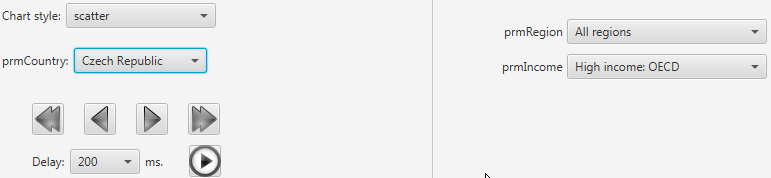
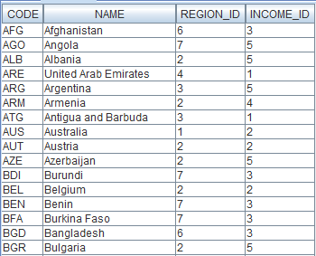
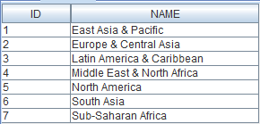
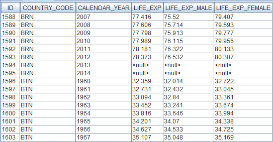
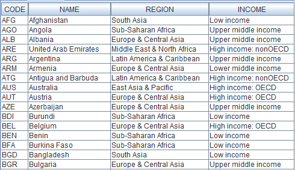
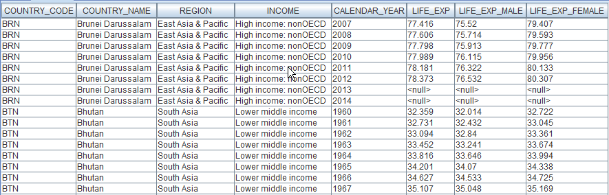

The wb09 project
General info
Project description
Changes relative to the wb08 project
Data source
The About view
The Life expectancy at birth view
The Aggregated life expectancy (income) view
The Aggregated life expectancy (region) view
Database
General info
This project provides three types of charts concerning the life expectancy at birth in the world.
- The view Life expectancy at birth displays XY charts of the life expectancy by country.
- The view Aggregated life expectancy (income) displays bar charts of the life expectancy by year, aggregated by gender and income groups.
- The view Aggregated life expectancy (region) displays bar charts of the life expectancy by year, aggregated by gender and region.
Project description
Changes relative to the wb08 project:
- The views Aggregated life expectancy (income) and Aggregated life expectancy (region) have been added to the project.
Data source
The project declares an SQL data source consisting of an embedded Derby database stored in a zip file located in the project's directory.
Because Viewreka sets the value of the system property 'user.dir' to the directory of the current project, this property is used in the connection string to locate the database.
The About View
The About view provides an HTML chart with information about this project. The chart content is retrieved from an external file (and it is the document you are currently reading).
The Life expectancy at birth View
The Life expectancy at birth view provides an XY chart based on the dataset dsLifeExp, which is defined by a parameterized query.
The desired chart style can be selected from a combobox.
Groups of countries can be created by selecting the desired entries in the prmRegion and prmIncome comboboxes.
Then, the user can select a country from the group by using the prmCountry combobox, as seen below:

It is also possible to manually iterate through the countries by using the arrow buttons or let the program iterate automatically by pressing the  button.
button.
The comboboxes prmRegion and prmIncome also contain an option for selecting all values of the associated parameter.
The Aggregated life expectancy (income) View
The Aggregated life expectancy (income) view provides a bar chart based on the dataset dsAggrLifeExpIncome, which is defined by a parameterized query.
The desired year can be selected from a combobox, as seen below:
It is also possible to manually iterate through the years by using the arrow buttons or let the program iterate automatically by pressing the button.
The Aggregated life expectancy (region) View
The Aggregated life expectancy (region) view provides a bar chart based on the dataset dsAggrLifeExpRegion, which is defined by a parameterized query.
The desired year can be selected from a combobox, as seen below:
It is also possible to manually iterate through the years by using the arrow buttons or let the program iterate automatically by pressing the button.
Database
This project uses a Derby database compiled from data provided by the World Bank.
The database consists of four tables, as seen in the figure below:
 Below is a sample of the data contained in these tables:
Below is a sample of the data contained in these tables:
TA_COUNTRY

|
TA_REGION

|
TA_INCOME

|
TA_INDICATOR

|
The database also contains two views that present the data in a user friendly form, as illustrated by the samples below:
V_COUNTRY

V_INDICATOR
